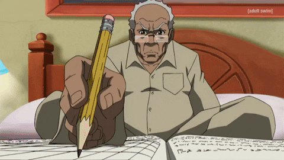

Poesi
Språk som känsla
Poesi använder rytm, bildspråk och koncentrerade ord för att uttrycka sådant som ofta är svårt att säga rakt ut.
Det är både hantverk och självuttryck: ett sätt att pröva tankar, stanna upp och ge känslor en tydligare form.